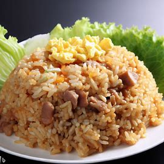

Fried Rice

Fried rice is a delicious and versatile dish that can be customized with a
variety of ingredients.
Ingredients
- 3 cups cooked and cooled jasmine or long-grain white rice
- 2 tablespoons vegetable oil
- 1 small onion, finely chopped
- 2 cloves garlic, minced
-
1 cup mixed vegetables (e.g., peas, carrots, corn, or bell peppers)
- 1/2 cup diced cooked protein (e.g., chicken, shrimp, or tofu)
- 2 large eggs, beaten
- 3 tablespoons soy sauce
- 2 green onions, thinly sliced
- 1/2 teaspoon sesame oil
- Salt and pepper, to taste